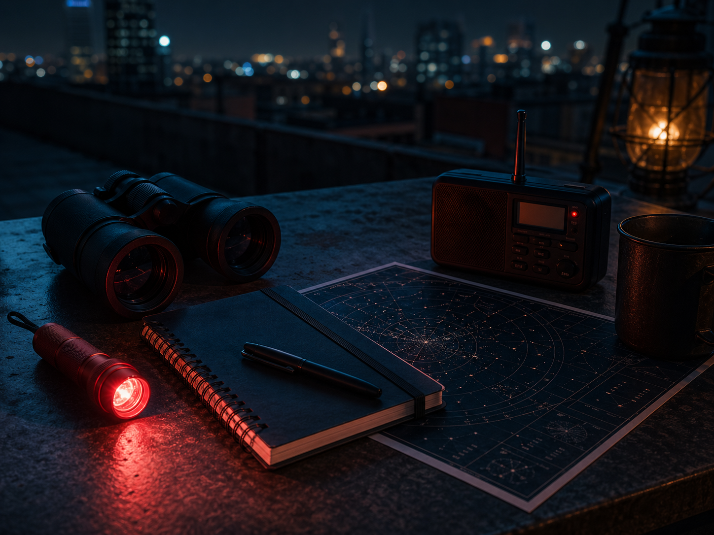

ISS northeast arc
Bright, fast pass climbing above the skyline for roughly six minutes.
Urban astronomy desk
A simple dashboard concept for planning visible satellite passes, moonlit walks, and quiet observation windows after dark.
Tonight
Bright, fast pass climbing above the skyline for roughly six minutes.
Good binocular view while the moon sits low and the western sky darkens.
Best chance for a short session from a rooftop or darker courtyard.
Kit

Red-light mode for checking notes without ruining night vision.
Compass bearings for quick alignment between buildings.
Weather and haze checks before committing to a long walk.
Logbook
Tuesday Thin clouds cleared after 21:30. Saturn visible with steady focus.
Sunday Streetlights made the north view weak, but the zenith stayed usable.